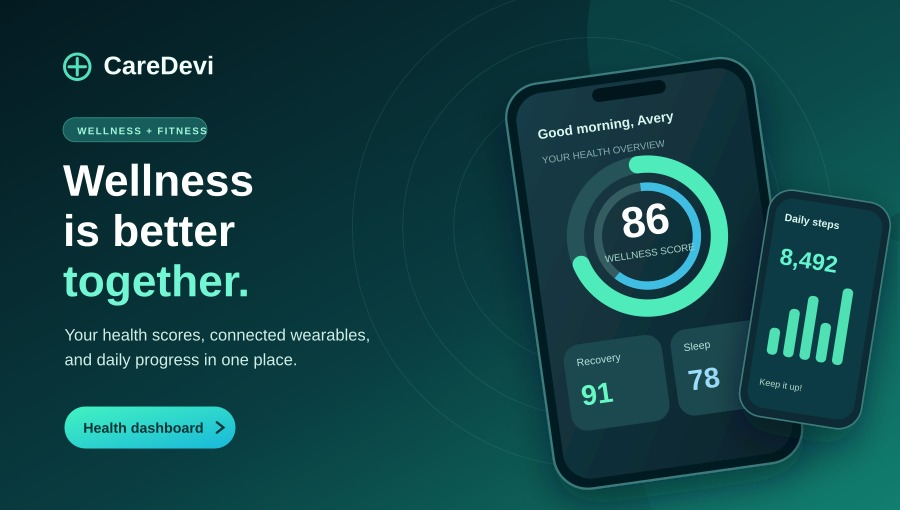
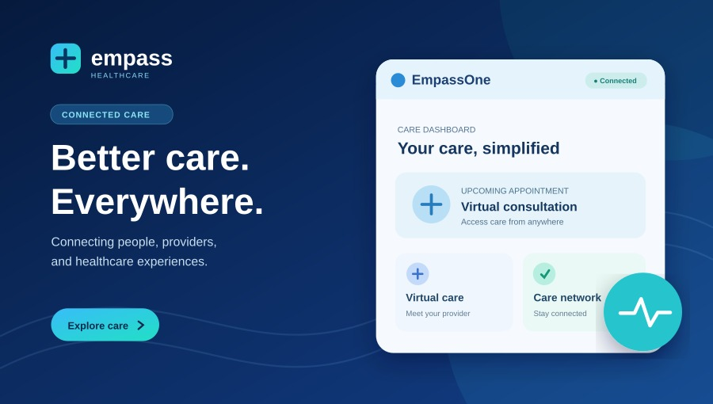
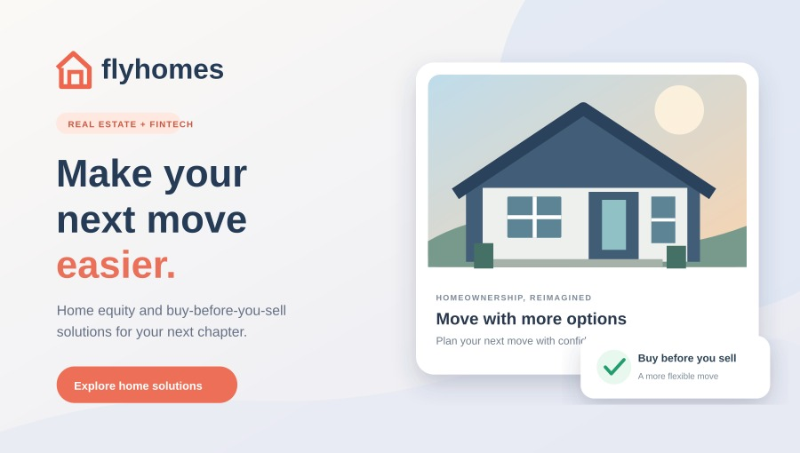

This page works directly from the extracted folder, without installing npm or running Vite. If you see the beach avatar and four projects below, the updated photo files are present.



In this exact folder run npm.cmd install then npm.cmd run dev -- --host 127.0.0.1 --port 5174 --strictPort. Visit http://127.0.0.1:5174/ and press Ctrl+Shift+R.
These project thumbnails are illustrations, not screenshots of the sites.